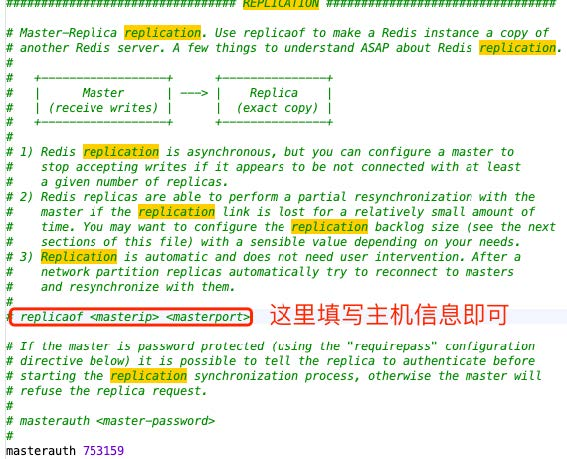
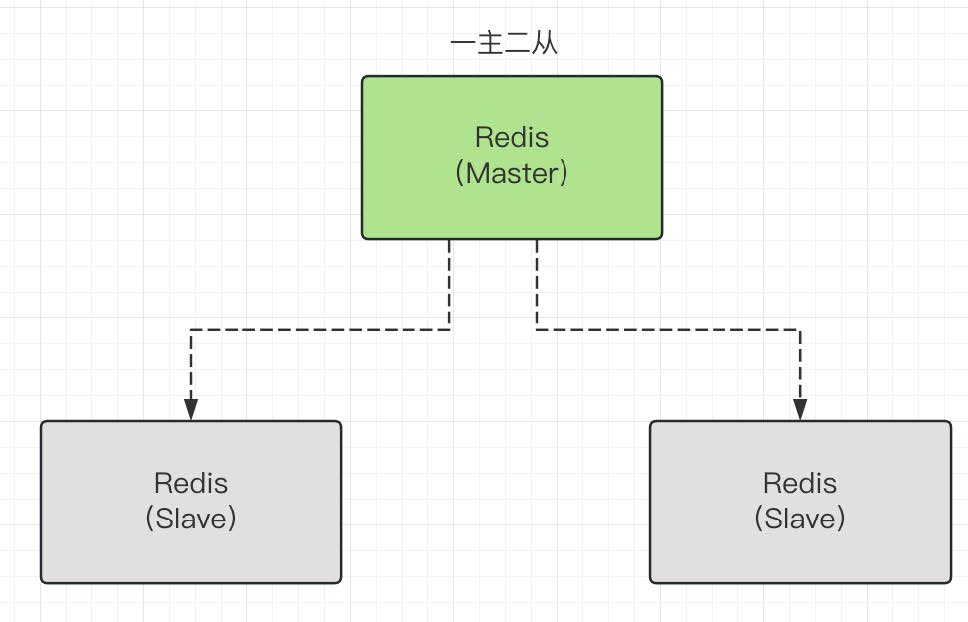
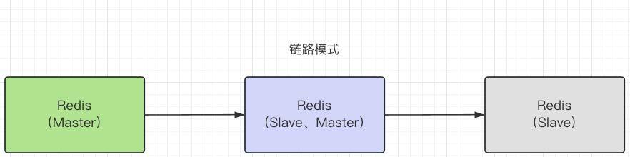
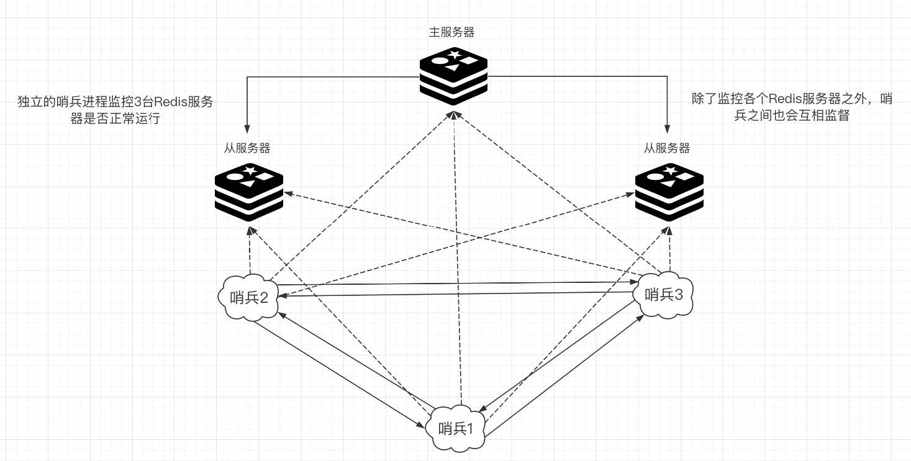

Redis主从复制
介绍
- 主节点可读写，从节点只能读
- 通过主从复制，可以有多个从服务器（Slave）复制⼀个主服务器（Master）的数据。在这个系统中，数据的复制是单向的，只能由主服务器（Master）到从服务器（Slave）。
- 为什么要有主从复制
- 结构上，单个Redis服务器可能会出现单点故障，并且⼀台服务器处理所有请求，负载压⼒较⼤
- 容量上，单个Redis服务器内存容量有限，就算服务器内存很⼤也不可能全部⽤于Redis，⼀般来说单台Redis服务器内存最⼤不超过20G
- 主要作⽤
- 数据冗余：主从复制实现了数据的热备份，是持久化的⼀种数据冗余⽅式
- 故障恢复：主节点⼀旦出现问题，可以由从节点提供服务，避免出现程序不可⽤的情况，实现快速故障恢复。
- 负载均衡：在主从复制的基础之上，配合读写分离，主节点提供写服务，由从节点提供读服务，分担服务器负载，尤其是在读多写少场景下，可以⼤⼤提⾼Redis并发量
- ⾼可⽤（集群）基⽯：主从复制是集群和哨兵模式的基础。
主从复制搭建
环境搭建：修改配置文件
主从复制最基本的也需要1主2从
只需要配置从库，因为默认情况下，每台Redis服务器都是主节点
查看redis数据库的相关信息：info replication
127.0.0.1:6379> info replication # 查看当前库信息
# Replication
role:master # ⻆⾊
connected_slaves:0 # 从机数为0
master_failover_state:no-failover
master_replid:130b95225e959f7086748c1b36507e74ba332d21
master_replid2:0000000000000000000000000000000000000000
master_repl_offset:0
second_repl_offset:-1
repl_backlog_active:0
repl_backlog_size:1048576
repl_backlog_first_byte_offset:0
repl_backlog_histlen:0
⾸先我们需要⾄少3台服务器，我们⼿⾥⼀般只有⼀台Redis，所以我们需要通过修改配置⽂件的⽅式来模拟3台机器
修改配置⽂件，将端⼝信息改变，同时配置⽂件也需要三份：
先把配置文件恢复到之前的样子
# save "" 注释掉 appendonly no #关闭AOF模式复制配置文件
cp redis.conf redis.config79 # 对应端口号：6379 cp redis.conf redis.config80 # 对应端口号：6380 cp redis.conf redis.config81 # 对应端口号：6381修改配置：与端口号相关的
port 6380/81 # 修改两台从机端⼝号 pidfile /var/run/redis_6380/81.pid # 进程号修改 logfile "redis79/80/81.log" # ⽇志名称改⼀下 dbfilename dump6379/80/81.rdb # RBD⽂件名 #===========两台从机注意，必须设置主机登录密码=========== masterauth 753159pidfile：
pidfile是一个重要的配置项，它用于指定Redis服务器进程的PID（进程ID）文件路径。PID是操作系统为每个进程分配的唯一标识符，通过PID可以追踪和管理进程。具体来说，pidfile的作用包括：- 存储进程ID：当Redis服务器启动时，它会创建一个子进程来处理客户端请求，并将该子进程的PID写入到
pidfile指定的文件中。这个文件通常是一个文本文件，包含Redis进程的PID号码。 - 方便管理和监控：通过读取
pidfile文件，可以方便地获取Redis服务器的进程ID，进而使用操作系统的命令或管理工具来监控Redis服务器的运行状态，如内存使用情况、连接数等。同时，也可以使用进程ID来关闭、重启或查看Redis服务器的进程状态。 - 防止重复启动：在启动Redis服务器之前，系统会先检查
pidfile是否存在。如果存在且对应的进程正在运行，则会报错并拒绝启动新的Redis服务器实例，从而避免在同一台主机上重复启动多个Redis进程，防止资源浪费和冲突。
pidfile /var/run/redis/redis-server.pid这表示Redis服务器会将子进程的PID写入到
/var/run/redis/redis-server.pid文件中。用户可以根据自己的需求修改这个配置项来指定不同的文件名和路径。- 存储进程ID：当Redis服务器启动时，它会创建一个子进程来处理客户端请求，并将该子进程的PID写入到
关闭原有的redis
systemctl stop redis # 通过系统服务关闭原始Redis通过配置⽂件来⼿动启动3个Redis：
redis-server /usr/local/redis-7.0.12/redis.config79[root@centos01 redis-7.0.12]# ps -ef|grep redis root 110619 114112 0 00:34 pts/0 00:00:00 grep --color=auto redis [root@centos01 redis-7.0.12]# redis-server /usr/local/redis-7.0.12/redis.config79 [root@centos01 redis-7.0.12]# redis-server /usr/local/redis-7.0.12/redis.config80 [root@centos01 redis-7.0.12]# redis-server /usr/local/redis-7.0.12/redis.config81 [root@centos01 redis-7.0.12]# ps -ef|grep redis root 115646 1 0 00:37 ? 00:00:00 redis-server 0.0.0.0:6379 root 115864 1 0 00:37 ? 00:00:00 redis-server 0.0.0.0:6380 root 116048 1 0 00:37 ? 00:00:00 redis-server 0.0.0.0:6381 root 116251 114112 0 00:37 pts/0 00:00:00 grep --color=auto redis
具体搭建：哪个是主
客户端redis-cli连接redis
redis-cli -p 6379 -a 753159 redis-cli -p 6380 -a 753159 redis-cli -p 6381 -a 753159在从机那里配置哪个是主机
127.0.0.1:6380> SLAVEOF 127.0.0.1 6379 127.0.0.1:6381> SLAVEOF 127.0.0.1 6379查看主机状态
127.0.0.1:6379> info replication # Replication role:master # 主机 connected_slaves:2 # 从机数量2 slave0:ip=127.0.0.1,port=6380,state=online,offset=126,lag=0 #从机信息 slave1:ip=127.0.0.1,port=6381,state=online,offset=126,lag=0 #从机信息 master_failover_state:no-failover master_replid:992eba4bc7708f85758befb88b2ee02a18b7ca8e master_replid2:0000000000000000000000000000000000000000 master_repl_offset:126 second_repl_offset:-1 repl_backlog_active:1 repl_backlog_size:1048576 repl_backlog_first_byte_offset:1 repl_backlog_histlen:126查看从机状态
127.0.0.1:6380> info replication # Replication role:slave # 从机 master_host:127.0.0.1 master_port:6379 # 主机 master_link_status:up master_last_io_seconds_ago:5 master_sync_in_progress:0 slave_read_repl_offset:560 slave_repl_offset:560 slave_priority:100 slave_read_only:1 replica_announced:1 connected_slaves:0 master_failover_state:no-failover master_replid:992eba4bc7708f85758befb88b2ee02a18b7ca8e master_replid2:0000000000000000000000000000000000000000 master_repl_offset:560 second_repl_offset:-1 repl_backlog_active:1 repl_backlog_size:1048576 repl_backlog_first_byte_offset:1 repl_backlog_histlen:560
⽬前我们是通过命令来配置的，是暂时的，⼀旦服务停机，就会失效，如果我们想要永久有效，需要来改配置！(不推荐)
主从复制原理：
- Slave启动成功连接到Master后会发送⼀个sync（同步）命令
- Master收到命令以后，会启动后台存盘进程，同时收集所有修改命令
- 后台存盘线程执⾏完毕之后，会将Master整体数据全量复制到slave中，完成第⼀次同步
- 全量复制：将Master中所有数据进⾏保存传输到Slave中
- 增量复制：Master后续新增的修改命令会以此传给Slave，完成同步
- 注意：如果有Slave断开，⼀旦重新连接就会触发全量复制
常见的主从模型
一主二从
链路模式
之前，6381的主机是6379，现在把6381的主机改成6380就可以了
127.0.0.1:6381> SLAVEOF 127.0.0.1 6380
主机的信息如下：
127.0.0.1:6379> info replication
# Replication
role:master
connected_slaves:1 #从机数量变为⼀台
slave0:ip=127.0.0.1,port=6380,state=online,offset=1982,lag=0
master_failover_state:no-failover
master_replid:992eba4bc7708f85758befb88b2ee02a18b7ca8e
master_replid2:0000000000000000000000000000000000000000
master_repl_offset:1982
second_repl_offset:-1
repl_backlog_active:1
repl_backlog_size:1048576
repl_backlog_first_byte_offset:1
repl_backlog_histlen:1982
两天从机的信息：
############################################ 6380 ##########################################################
127.0.0.1:6380> info replication
# Replication
role:slave # 依旧是从机
master_host:127.0.0.1
master_port:6379
master_link_status:up
master_last_io_seconds_ago:10
master_sync_in_progress:0
slave_read_repl_offset:1954
slave_repl_offset:1954
slave_priority:100
slave_read_only:1
replica_announced:1
connected_slaves:1
slave0:ip=127.0.0.1,port=6381,state=online,offset=1954,lag=0
master_failover_state:no-failover
master_replid:992eba4bc7708f85758befb88b2ee02a18b7ca8e
master_replid2:0000000000000000000000000000000000000000
master_repl_offset:1954
second_repl_offset:-1
repl_backlog_active:1
repl_backlog_size:1048576
################################################ 6381 ######################################################
127.0.0.1:6381> info replication
# Replication
role:slave
master_host:127.0.0.1
master_port:6380 #主机变为了6380
master_link_status:up
master_last_io_seconds_ago:3
master_sync_in_progress:0
slave_read_repl_offset:1954
slave_repl_offset:1954
slave_priority:100
slave_read_only:1
replica_announced:1
connected_slaves:0
master_failover_state:no-failover
master_replid:992eba4bc7708f85758befb88b2ee02a18b7ca8e
master_replid2:0000000000000000000000000000000000000000
master_repl_offset:1954
second_repl_offset:-1
repl_backlog_active:1
repl_backlog_size:1048576
repl_backlog_first_byte_offset:113
repl_backlog_histlen:1842
哨兵模式
相关概念
哨兵模式（Sentinel mode）主要有三个⽬标：
- 监控：哨兵模式会不断地检查主服务器和从服务器是否按预期⼯作。
- 通知：如果某些Redis实例有故障，哨兵模式可以通过API向管理员或者其他应⽤程序发送通知。
- ⾃动故障转移：如果主服务器⽆法正常⼯作，哨兵模式可以开始⼀个故障转移过程，由⼀个从服务器升级为新的主服务器，并让其他从服务器改变他们的主服务器为新的主服务器。
Redis的哨兵模式有以下⼏个主要特点：
- 哨兵模式⾃动转移失败的主服务器到⼀个从服务器。
- 哨兵模式持续监控所有Redis服务器，以便在需要时报告错误。
- 通过提供⼀个基于哨兵的API，客户端可以⾃动发现新的主服务器地址。
主观下线与客观下线：
- Sentinel（哨兵）时基于⼼跳机制检测服务状态的，每隔1秒向每隔实例发送⼀个ping命令，如果某个sentinel发现某Redis实例未在规定时间内响应，则认为该实例主观下线，
- 若超过指定数量（quorum）的sentinel都认为该实例主观下线，则该实例客观下线。quorum的值最好超过Sentinel实例数的⼀半
故障转移的过程：
- 如果此时主服务器宕机，哨兵1检测到了，系统并不会⽴即进⾏failover（故障转移）过程
- 此时仅仅是哨兵1主管的认为主服务不可⽤，此现象为主观下线
- 当后续的哨兵也检测到主服务器不可⽤时，并且数量达指定数量时
- 哨兵之间就会进⾏⼀次投票，投票结果由1个哨兵发起，进⾏failover操作
- 切换成功之后，就会通过发布订阅模式，让各个哨兵把⾃⼰监控的从服务器切换主机，这个过程为客观下线
选举过程：
⼀旦发现master故障，sentinel需要在salve中选择⼀个作为新的master，选择依据是这样的:
- ⾸先会判断slave节点与master节点断开时间⻓短，如果超过指定值 (down-aftermilliseconds*10)则会排除该slave节点
- 然后判断slave节点的slave-priority值，越⼩优先级越⾼，如果是0则永不参与选举
- 如果slave-prority⼀样，则判断slave节点的offset值，越⼤说明数据越新，优先级越⾼
- 最后是判断slave节点的运⾏id⼤⼩，越⼩优先级越⾼
故障转移：
- Sentinel给备选的节点发送
slaveof on one命令，让该节点成为Maskter - Sentinel给其他slave发送
slaveof ip 端⼝命令，开始从Master上同步数据 - 最后Sentinel将故障节点标记为slave（执⾏
slaveof ip 端⼝命令），故障节点恢复以后也会成为新Master的slave
简单演示
sentinel.conf配置文件
文件的位置：/usr/local/redis-7.0.12/sentinel.conf
# sentinel monitor <master-name> <ip> <redis-port> <quorum>
sentinel monitor mymaster 127.0.0.1 6379 1
# master-name⾃定义
# ip 主Redis ip
# quorum 表示最少有⼏个哨兵认可进⾏故障迁移
# 主服务器进⼊密码: 也需要连接主服务器
# sentinel auth-pass <master-name> <password>
sentinel auth-pass mymaster 753159
# =====================其他命令==========================
#指定多少毫秒之后，主节点没有应答哨兵，此时哨兵主观上认为主节点下线
sentinel down-after-milliseconds <master-name> <milliseconds>
#表示允许并⾏同步的slave个数，当Master挂了后，哨兵会选出新的Master，此时，剩余的slave会向新的master发起同步数据
sentinel parallel-syncs <master-name> <nums>
#故障转移的超时时间，进⾏故障转移时，如果超过设置的毫秒，表示故障转移失败
sentinel failover-timeout <master-name> <milliseconds>
#配置当某⼀事件发⽣时所需要执⾏的脚本
sentinel notification-script <master-name> <script-path>
#客户端重新配置主节点参数脚本
sentinel client-reconfig-script <master-name> <script-path>
具体搭建
redis79.conf也需要加上
masterauth 753159建⽴⼀个mysentinel⽬录，然后直接编写三个⽂件
三个文件对应3个ip端口
vi sentinel26379/80/81.conf sentinel26379.conf：26379 sentinel26380.conf：26380 sentinel26381.conf：26381配置内容如下：
# 具体配置 port 26379 daemonize yes sentinel monitor mymaster 127.0.0.1 6379 2 sentinel auth-pass mymaster 753159 sentinel down-after-milliseconds mymaster 3000 logfile "sentinel26379.log" dir "/usr/local/redis-sentinel/mylog" pidfile "/var/run/redis-sentinel-26379.pid"通过sentinel配置来启动
[root@centos01 redis-7.0.12]# redis-sentinel mysentinel/sentinel26379.conf [root@centos01 redis-7.0.12]# redis-sentinel mysentinel/sentinel26380.conf [root@centos01 redis-7.0.12]# redis-sentinel mysentinel/sentinel26381.conf要创建这个目录
/usr/local/redis-sentinel/mylog，要不然会报错[root@centos01 redis-7.0.12]# redis-sentinel mysentinel/sentinel26379.conf *** FATAL CONFIG FILE ERROR (Redis 7.0.12) *** Reading the configuration file, at line 7 >>> 'dir "/usr/local/redis-sentinel/mylog"' No such file or directory这个命令必须在指定目录（
/usr/local/redis-7.0.12）下运行，要不然也会报错[root@centos01 redis-sentinel]# redis-sentinel mysentinel/sentinel26379.conf 29558:X 16 Sep 2024 12:36:24.801 # Fatal error, can't open config file '/usr/local/redis-sentinel/mysentinel/sentinel26379.conf': No such file or directory查看sentinel是否启动成功：
[root@centos01 redis-7.0.12]# ps -ef|grep sentinel root 30365 1 0 12:37 ? 00:00:00 redis-sentinel *:26379 [sentinel] root 30534 1 0 12:37 ? 00:00:00 redis-sentinel *:26380 [sentinel] root 30634 1 0 12:37 ? 00:00:00 redis-sentinel *:26381 [sentinel] root 30854 56997 0 12:37 pts/0 00:00:00 grep --color=auto sentinel
查看主节点6379下线前后的状态
下线前：
### 主机6379 127.0.0.1:6379> info replication # Replication role:master connected_slaves:2 slave0:ip=127.0.0.1,port=6380,state=online,offset=177330,lag=1 slave1:ip=127.0.0.1,port=6381,state=online,offset=177330,lag=0 master_failover_state:no-failover master_replid:992eba4bc7708f85758befb88b2ee02a18b7ca8e master_replid2:0000000000000000000000000000000000000000 master_repl_offset:177330 second_repl_offset:-1 repl_backlog_active:1 repl_backlog_size:1048576 repl_backlog_first_byte_offset:1 repl_backlog_histlen:177330 ### 从机6380 127.0.0.1:6380> info replication # Replication role:slave master_host:127.0.0.1 master_port:6379 master_link_status:up master_last_io_seconds_ago:1 master_sync_in_progress:0 slave_read_repl_offset:187242 slave_repl_offset:187242 slave_priority:100 slave_read_only:1 replica_announced:1 connected_slaves:0 master_failover_state:no-failover master_replid:992eba4bc7708f85758befb88b2ee02a18b7ca8e master_replid2:0000000000000000000000000000000000000000 master_repl_offset:187242 second_repl_offset:-1 repl_backlog_active:1 repl_backlog_size:1048576 repl_backlog_first_byte_offset:1 repl_backlog_histlen:187242 ### 从机6381 127.0.0.1:6381> info replication # Replication role:slave master_host:127.0.0.1 master_port:6379 master_link_status:up master_last_io_seconds_ago:1 master_sync_in_progress:0 slave_read_repl_offset:190847 slave_repl_offset:190847 slave_priority:100 slave_read_only:1 replica_announced:1 connected_slaves:0 master_failover_state:no-failover master_replid:992eba4bc7708f85758befb88b2ee02a18b7ca8e master_replid2:0000000000000000000000000000000000000000 master_repl_offset:190847 second_repl_offset:-1 repl_backlog_active:1 repl_backlog_size:1048576 repl_backlog_first_byte_offset:113 repl_backlog_histlen:190735主机6379下线后，6381成为主机
127.0.0.1:6381> info replication # Replication role:master connected_slaves:1 slave0:ip=127.0.0.1,port=6380,state=online,offset=212341,lag=0 master_failover_state:no-failover master_replid:dbc4eb429517b23a25bbb1948de076ac54410ba9 master_replid2:992eba4bc7708f85758befb88b2ee02a18b7ca8e master_repl_offset:212341 second_repl_offset:202673 repl_backlog_active:1 repl_backlog_size:1048576 repl_backlog_first_byte_offset:113 repl_backlog_histlen:212229 ################################################# 127.0.0.1:6380> info replication # Replication role:slave master_host:127.0.0.1 master_port:6381 master_link_status:up master_last_io_seconds_ago:0 master_sync_in_progress:0 slave_read_repl_offset:208722 slave_repl_offset:208722 slave_priority:100 slave_read_only:1 replica_announced:1 connected_slaves:0 master_failover_state:no-failover master_replid:dbc4eb429517b23a25bbb1948de076ac54410ba9 master_replid2:992eba4bc7708f85758befb88b2ee02a18b7ca8e master_repl_offset:208722 second_repl_offset:202673 repl_backlog_active:1 repl_backlog_size:1048576 repl_backlog_first_byte_offset:1 repl_backlog_histlen:208722再次启动6379
127.0.0.1:6379> info replication # Replication role:slave master_host:127.0.0.1 master_port:6381 master_link_status:up master_last_io_seconds_ago:0 master_sync_in_progress:0 slave_read_repl_offset:250003 slave_repl_offset:250003 slave_priority:100 slave_read_only:1 replica_announced:1 connected_slaves:0 master_failover_state:no-failover master_replid:dbc4eb429517b23a25bbb1948de076ac54410ba9 master_replid2:0000000000000000000000000000000000000000 master_repl_offset:250003 second_repl_offset:-1 repl_backlog_active:1 repl_backlog_size:1048576 repl_backlog_first_byte_offset:245151 repl_backlog_histlen:4853
转载请注明来源，欢迎对文章中的引用来源进行考证，欢迎指出任何有错误或不够清晰的表达。可以在下面评论区评论，也可以邮件至 1909773034@qq.com